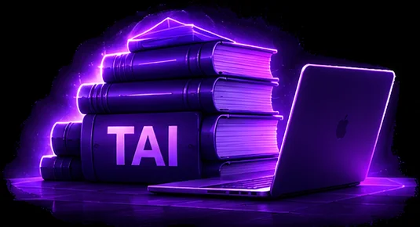

Resumen del temario
Técnicos Auxiliares de Informática de la AGE – 43 temas, todo lo marcado EXAMEN e IMPORTANTE está en recuadros.

43Temas
0 / 43Completados
Marcados592
0%Progreso
Bloques del temario
Bloque 1 · Organización del Estado y Administración electrónica
1.1.1La Constitución Española de 1978: estructura, derechos y deberes fundamentales, garantía y suspensión11 EXAMEN8 IMPORTANTE1.1.2La Corona: funciones constitucionales del Rey3 EXAMEN3 IMPORTANTE1.2.1Las Cortes Generales: Congreso y Senado, funcionamiento y tratados internacionales5 EXAMEN4 IMPORTANTE1.2.2El Tribunal Constitucional (LOTC): organización, magistrados y procedimientos11 EXAMEN4 IMPORTANTE1.2.3El Defensor del Pueblo (LO 3/1981)1 EXAMEN1.3El Gobierno y la Administración: Ley 50/1997 del Gobierno11 EXAMEN4 IMPORTANTE1.4.1TREBEP: personal al servicio de las AAPP, adquisición y pérdida de la relación de servicio4 EXAMEN20 IMPORTANTE1.4.2TREBEP: derechos, deberes y régimen disciplinario10 EXAMEN10 IMPORTANTE1.4.3Provisión de puestos de trabajo y carrera profesional19 EXAMEN10 IMPORTANTE1.4.4Situaciones administrativas e incompatibilidades18 EXAMEN1.4.5Negociación colectiva, representación y participación institucional16 EXAMEN2 IMPORTANTE1.4.6Ley 19/2013 de Transparencia, Acceso a la Información Pública y Buen Gobierno12 EXAMEN5 IMPORTANTE1.4.7La Agenda 2030, los ODS y la Alianza para el Gobierno Abierto2 EXAMEN1.5Políticas de igualdad, violencia de género, LGTBI, discapacidad y dependencia37 EXAMEN26 IMPORTANTE1.6Sociedad de la información, identidad y firma electrónica, DNI electrónico y Agenda Digital9 EXAMEN1.6CTema 6 Complementario: LSSI, RD 203/2021, Ley 6/2020, eIDAS, DNIe y España Digital 20266 EXAMEN8 IMPORTANTE1.7Protección de datos personales (RGPD, LOPDGDD) y derechos digitales16 EXAMEN1 IMPORTANTE1.8Acceso electrónico, registros, notificaciones, ENS, ENI y normas técnicas de interoperabilidad7 EXAMEN5 IMPORTANTE1.9Sedes electrónicas, canales y puntos de acceso, identificación y servicios comunes7 EXAMEN1 IMPORTANTE
Bloque 2 · Fundamentos de informática
2.1Informática básica, representación de la información, arquitectura y componentes de equipos microinformáticos23 EXAMEN5 IMPORTANTE2.2Periféricos: conectividad, administración, impresión, almacenamiento y visualización11 EXAMEN2 IMPORTANTE2.3Tipos abstractos y estructuras de datos, organizaciones de ficheros, algoritmos y formatos7 EXAMEN2 IMPORTANTE2.4Sistemas operativos: Windows, Unix, Linux y móviles14 EXAMEN2 IMPORTANTE2.5Sistemas de gestión de bases de datos: relacionales, orientadas a objetos y NoSQL10 EXAMEN2 IMPORTANTE
Bloque 3 · Bases de datos, programación y desarrollo
3.1Modelado de datos, diseño de bases de datos, modelo relacional y normalización16 EXAMEN3 IMPORTANTE3.2Lenguajes de programación, tipos de datos, estructuras y algoritmos8 EXAMEN2 IMPORTANTE3.3SQL: lenguajes de bases de datos, procedimientos, triggers y transacciones8 EXAMEN1 IMPORTANTE3.4Programación orientada a objetos, patrones, UML y flujogramas7 EXAMEN1 IMPORTANTE3.5Plataformas empresariales: Jakarta EE (Java EE) y .NET13 EXAMEN2 IMPORTANTE3.6Arquitecturas cliente/servidor y multicapas. Servicios web y protocolos9 EXAMEN3 IMPORTANTE3.7Aplicaciones web. Front-end y servidor. HTML, XML, CSS, JavaScript, PHP, Python y Ruby8 EXAMEN9 IMPORTANTE3.8Accesibilidad, diseño universal y usabilidad. Seguridad en el desarrollo (ENS, OWASP)5 EXAMEN3 IMPORTANTE3.9Repositorios, metodologías, DevOps, pruebas, control de versiones y calidad de código3 IMPORTANTE
Bloque 4 · Administración, redes y seguridad
4.1Administración de sistemas operativos: software de base, usuarios, actualización, mantenimiento, MDM y comandos11 EXAMEN4.2Administración de bases de datos, almacenamiento (SAN/NAS/DAS/RAID), backup y virtualización10 EXAMEN4.3Servidores de correo y sus protocolos; contenedores y microservicios8 EXAMEN4.4Administración de redes de área local: usuarios, directorio, Kerberos, SNMP, gestión y monitorización5 EXAMEN4.5Seguridad en sistemas de información, criptografía, firma digital, CPD, incidencias y control remoto16 EXAMEN2 IMPORTANTE4.6Comunicaciones: señales, medios de transmisión, redes, conmutación, móviles e inalámbricas16 EXAMEN4.7Modelo OSI, modelo TCP/IP, protocolo IP (IPv4/IPv6), enrutamiento y otros protocolos12 EXAMEN4.8Internet: gobernanza, arquitectura, DNS, servicios, HTTP/HTTPS y seguridad6 EXAMEN4.9Seguridad y protección en redes de comunicaciones5 EXAMEN1 IMPORTANTE4.10Redes locales: tipología, técnicas de transmisión, métodos de acceso e interconexión4 EXAMEN1 IMPORTANTE